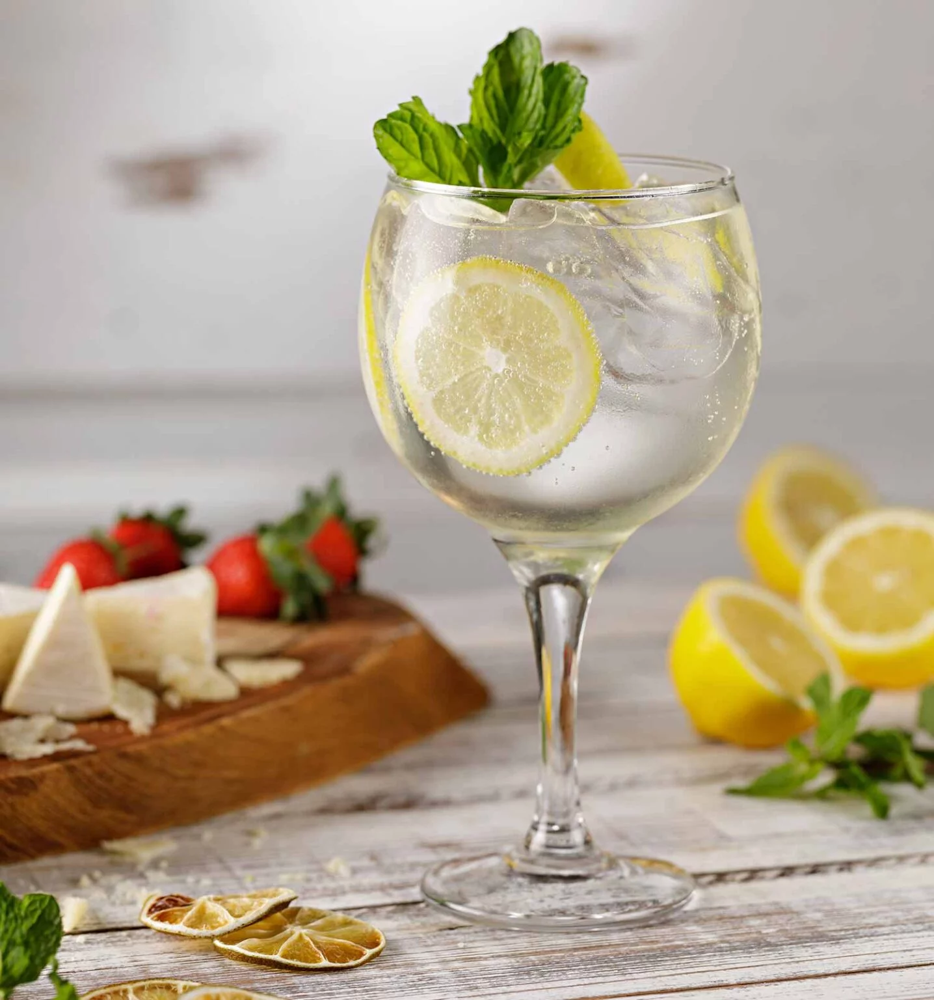

Voltar
Gin tônica

Vamos aos ingredientes
- Gin (50ml),Gelo , Água Tônica , Limão siciliano em rodela e um ramo de alecrim.
- Pega uma Taça (ou copo longo), e preencha com gelo.
- Acrescente os 50 ml de gin.
- Agora está na vez de colocar a água tônica , faça isso suavemente para que ela não perca o gás.
- Decore com a fatia de limão siciliano e o ramo de alecrim.